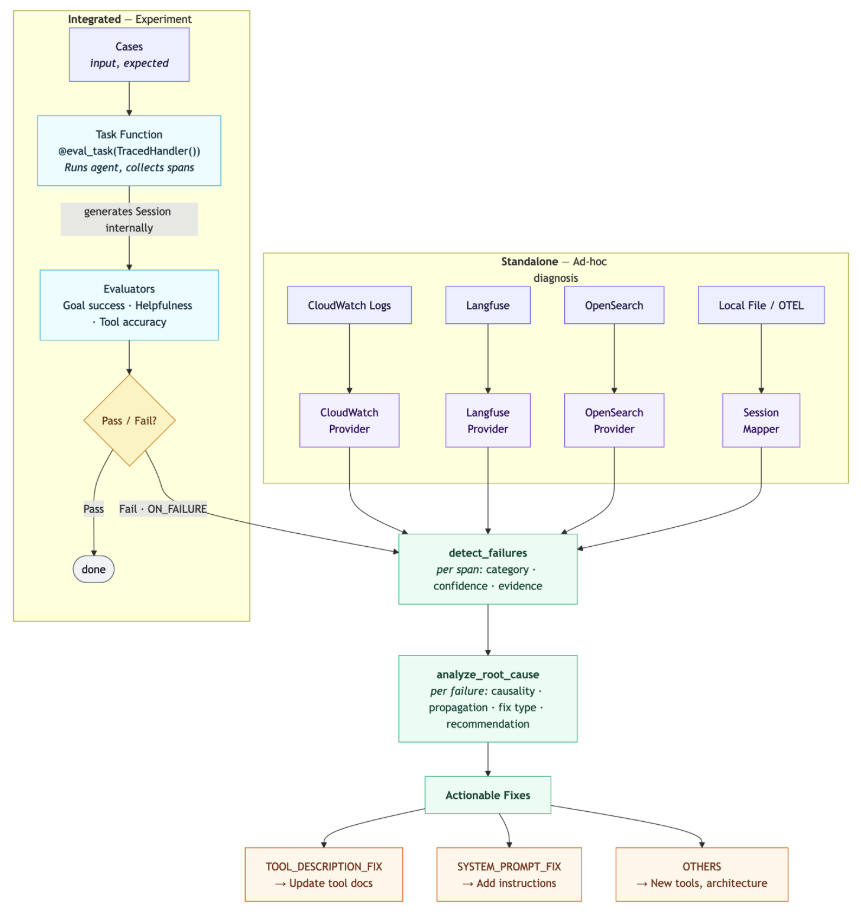
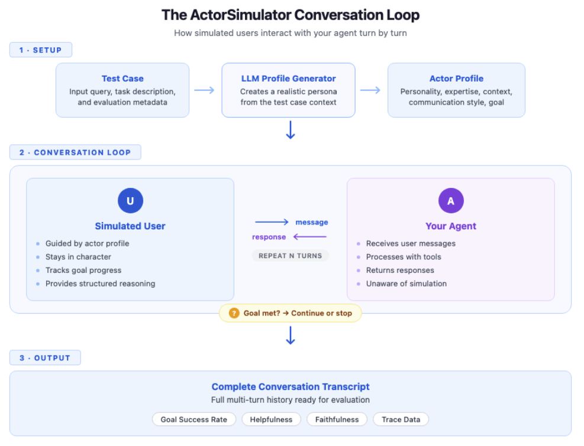
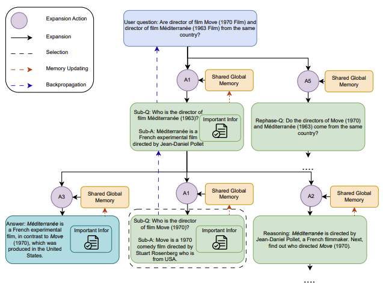
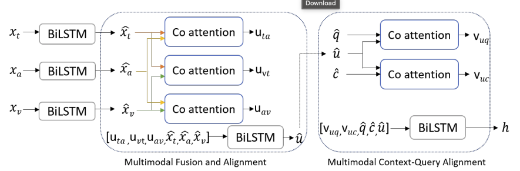
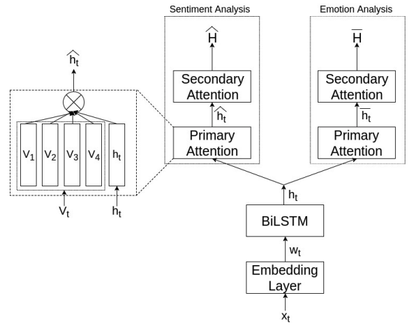
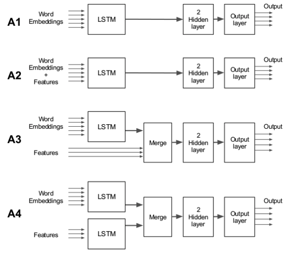
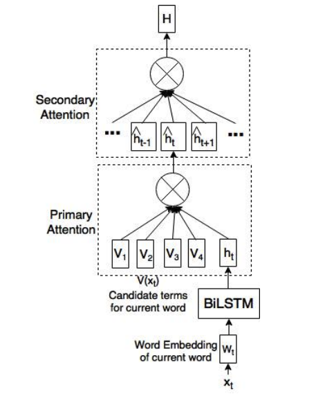
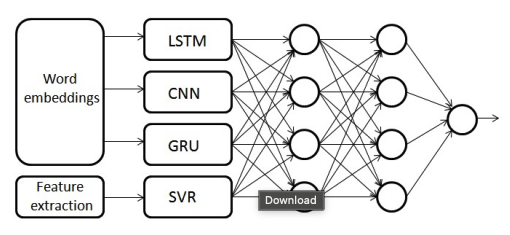

Abhishek Kumar
Senior Applied Scientist, AWS AI · New York
I am a Senior Applied Scientist at AWS AI in New York, working at the intersection of research and production on LLM agents and their evaluation. My recent work spans agent evaluation (post-trained evaluator models, trace-level root-cause analysis, persona-conditioned user simulation), retrieval-augmented generation with adaptive memory, and LLM post-training with reinforcement learning, much of it shipped in the open-source Strands Agents & Evals SDKs and AWS Bedrock AgentCore.
Earlier, I worked on large-scale LLM post-training and conversational AI at Amazon AGI and Alexa. My academic background is in natural language processing: sentiment and emotion analysis, multi-task learning, and multimodal question answering, with research internships at Kyoto University, the University of Hamburg, IISc, and Université Paul Sabatier.
Research interests: LLM agents & agent evaluation · retrieval, memory & RAG · reasoning & planning · multi-turn dialogue · LLM post-training & RL.
Blog Posts


Publications
Name underlined; ∗ denotes equal contribution. Full list on Google Scholar.







See Google Scholar for the complete list (incl. SemEval-2017 and LT-ABSA).
Experience
Education
Service & Awards
- Area Chair: Who Verifies the Agents? Workshop, NeurIPS 2026.
- Reviewer: ACL 2026, EMNLP 2021 & 2026, NeurIPS 2026, ACM CHI 2026.
- Open source: core contributor to the Strands Agents & Evals SDKs (ActorSimulator user simulator, graph-based Root-Cause Analyzer).
- Mentorship: mentored three research interns (2022, 2024, 2025); all received return offers.
- Awards: Best B.Tech. Thesis (IIT Patna); DAAD WISE Fellowship; Honda Research Institute Grant.